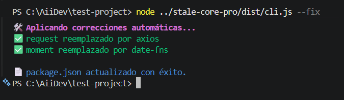
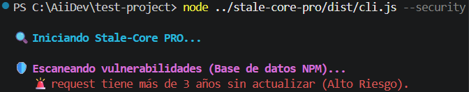
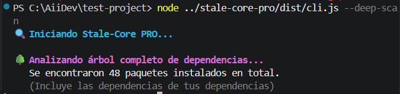

El gestor de dependencias definitivo para Node.js. Detecta, analiza y soluciona problemas de deuda técnica.



package.json.// Arquitectura: Node.js + TypeScript + Commander.js + Axios.
Elige la versión que mejor se adapte a tus necesidades.